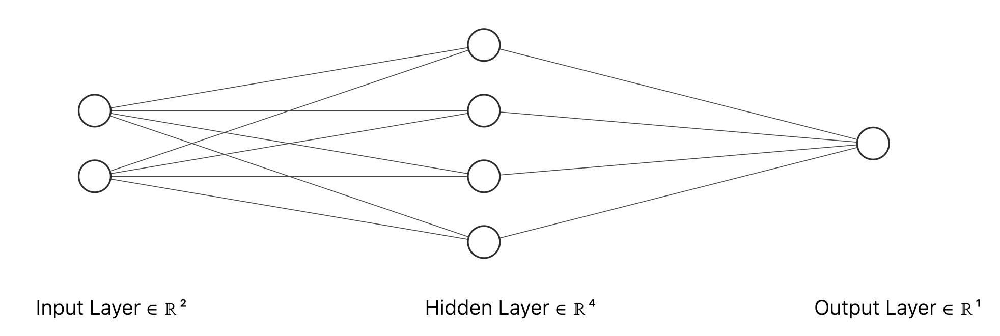
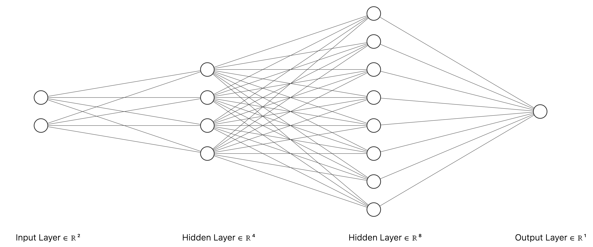
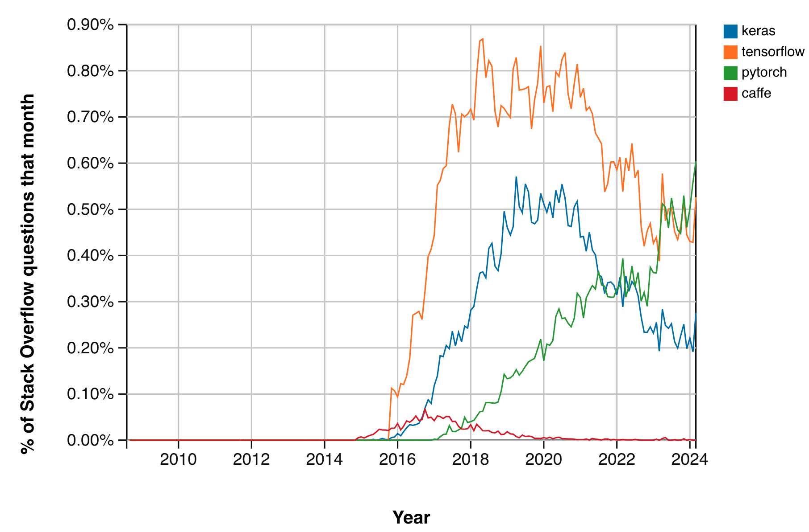

目錄¶
- 人工智慧入門（P.3）
- PyTorch 入門（P.68）
- 圖片辨識模型（P.110）
- Ollama 入門（P.131）
- 小型語言模型（P.143）
- 隨堂練習（P.165）
人工智慧入門¶
資料科學、機器學習、深度學習與人工智慧¶
- 資料科學是一門涵蓋多個學科的領域，結合了數學、統計學和電腦科學，藉此針對大量資料進行分析，透過資料獲取有意義之資訊，進而對企業的營運、獲利產生助益。
- 機器學習是資料科學研究流程的其中一個環節：模型，經過訓練後建立一個能夠針對無標籤資料預測的函數。
- 深度學習是機器學習的一個子集合，是一種不需要使用者直接決定特徵的最適化方法，改由深度學習的結構間接決定。
- 人工智慧是機器學習的母集合，是一門希望讓軟體程式模擬或複製人類認知任務的能力，具備人工智慧的軟體可以分析資料、辨識符號、與人類對話等。
深度學習，或稱神經網路是近年人工智慧崛起的基礎¶
- 不論是聊天機器人、圖片生成、機器翻譯、音訊生成或者是影像生成，本質都是生成「張量」。
- 「張量」指的是三維以上的陣列。
- 人工智慧可以簡單認知為透過深度學習在自然語言領域獲得了飛躍的進展。
在人工智慧之前，先暸解深度學習¶
- 深度學習是一種使用連續且多層的矩陣運算與激勵函數，從訓練資料進行模型係數最適化的方法。
- 深度學習是機器學習的一個分支。
- 以集合概念來說明的話，深度學習包含於機器學習之中，是機器學習集合的子集合。
什麼是機器學習：三個要素、一個但書¶
A computer program is said to learn from experience E with respect to some class of tasks T and performance measure P if its performance at tasks in T, as measured by P, improves with experience E.
給定答案 $y$ 以及資料 $X$，機器學習的電腦程式在最小化損失函數 $J$ 的前提下生成規則 $w$，進而獲得預測 $\hat{y}$¶
\begin{equation} \text{choose} \; w \in \mathbb{R^n} \; \text{where} \; w \; \text{minimizes} \; J(w) \\ \text{subject to} \; \hat{y} = h(X; w) = Xw \\ \text{where} \; J(w) \; \text{measures the loss between} \; y \; \text{and} \; \hat{y} \\ \end{equation}給定答案 $y$、資料 $X$、活化函數 $g^{(i)}$，深度學習的電腦程式在最小化損失函數 $J$ 的前提下生成規則 $W^{(i)}$ 與誤差 $b^{(i)}$，進而獲得預測 $\hat{y}$¶
\begin{equation} \text{choose} \; W^{(i)} \in \mathbb{R^{m \times n}} \; \text{and} \; b^{(i)} \in \mathbb{R^n} \\ \text{where} \; W^{(i)} \; \text{and} \; b^{(i)} \text{minimizes} \; J(W^{(i)}, b^{(i)}) \\ \text{subject to} \; \hat{y} = h(X; W^{(i)}, b^{(i)}, g^{(i)}) = \prod g^{(i)} ( A^{(i-1)}W^{(i)} + b^{(i)} ) \\ \text{where} \; A^{(0)} = XW^{(1)} + b^{(1)} \\ \text{where} \; i \in {\mathbb{Z^+}|\max(i) \geq 2} \\ \text{where} \; J(W^{(i)}, b^{(i)}) \; \text{measures the loss between} \; y \; \text{and} \; \hat{y} \end{equation}為何深度學習¶
- 機器學習要求先釐清特徵矩陣和目標向量之間的可能關聯。
- 當資料中提取出特徵這件事情成為與預測一樣困難的時候，機器學習就難以派上用場。
- 深度學習允許電腦程式將相對單純的輸入構建成複雜的函數映射系統，藉此讓使用者能在不釐清特徵矩陣與目標向量之間關聯的情況下進行預測。
深度學習的主要應用場景¶
- 深度學習在特定領域諸如影像分類、語音識別或機器翻譯等難以進行特徵工程的領域特別受到歡迎。
- 深度學習擅長的領域是人類相對於電腦程式容易執行的任務。
- 對人們來說影像分類、語音識別或語言翻譯是很直觀的事情，但對於電腦程式來說，解決這些問題的邏輯、規則都無法用程式語言描述。
深度學習時代的來臨：突破機器學習表現不夠好的任務¶
- 表現不夠好的任務：
- 難以用言語描述規則的任務：電腦視覺。
- 輸入與輸出有遞迴關係：時間序列、自然語言、強化學習。
- 深度學習是機器學習的一個分支，是一種不需要使用者直接決定特徵的演算法，改由深度學習的結構間接決定。
- 人類能夠輕易做到小規模，但是想大規模處理會曠日費時的任務（例如翻譯、影像辨識）。
深度學習也不是一門橫空出世的學科¶
- 感知器（Perceptron）於 1950s 問世。
- 反向傳播演算法（Backpropagation）於 1970s 問世。
- 遞歸神經網路（Recurrent Neural Network）於 1970s 問世。
- 卷積神經網路（Convolutional Neural Network）於 1980s 問世。
深度學習的溯源¶
- Frank Rosenblatt 於 1957 年提出感知器（Perceptron），是深度學習模型的雛型。
- 感知器是一種由特徵 $x$、係數 $w$ 、誤差 $b$ 與階躍函數 $\chi$ 組合而成的函數。
感知器與羅吉斯迴歸¶
- 羅吉斯迴歸較感知器多了 Sigmoid 函數的轉換才輸入階躍函數。
- 感知器之所以未能發揚光大，就是缺乏能將線性輸入 $w^Tx$ 轉換為非線性的活化函數（Activation function）。
深度學習與機器學習的差異¶
兩者同樣利用 $h$ 函數來逼近某個函數 $f$，但由於深度學習模型具備了層數的結構，需要近似的函數 $h$ 也成為了鏈結函數。
\begin{align} \hat{y} &= h(X; W^{(i)}, b^{(i)}, g^{(i)}) \\ &= g^{(n)}( ... (g^{(2)}(g^{(1)}(XW^{(1)} + b^{(1)})W^{(2)} + b^{(2)})...)W^{(n)} + b^{(n)}) \end{align}深度學習模型的層數與單位數¶
- 層數 $l$：一個最基本的深度學習模型層數至少要有三層 $l \in \mathbb{Z^+}|l \geq 3$，輸入層、隱藏層與輸出層。
- 間隔數 $i$：如同植樹問題，層數減去 1 即為間隔數。
- 輸入層單位數：與特徵矩陣的一列觀測值 $x_i$ 的外型相同。
- 隱藏層單位數：隱藏層要有幾個神經元通常會以 $2^{n} \; , \; n \in \mathbb{Z^+}|n \geq 1$ 來自訂。
- 輸出層單位數：與目標向量的一列觀測值 $\hat{y_i}$ 的外型相同。

深度學習模型的層數、單位數以及欲求解的係數與誤差¶
- 層數 $l$：$l = 3$
- 間隔數 $i$：$i = 2$
- 輸入層單位數：2
- 隱藏層單位數：4
- 輸出層單位數：1
- $W^{(1)} \in \mathbb{R^{2 \times 4}}, \; b^{(1)} \in \mathbb{R}^4$
- $W^{(2)} \in \mathbb{R^{4 \times 1}}, \; b^{(2)} \in \mathbb{R}^1$

深度學習模型的層數、單位數以及欲求解的係數與誤差（續）¶
- 層數 $l$：$l = 4$
- 間隔數 $i$：$i = 3$
- 輸入層單位數：2
- 隱藏層一單位數：4
- 隱藏層二單位數：8
- 輸出層單位數：1
- $W^{(1)} \in \mathbb{R^{2 \times 4}}, \; b^{(1)} \in \mathbb{R}^4$
- $W^{(2)} \in \mathbb{R^{4 \times 8}}, \; b^{(2)} \in \mathbb{R}^8$
- $W^{(3)} \in \mathbb{R^{8 \times 1}}, \; b^{(3)} \in \mathbb{R}^1$
機器學習的電腦程式透過「梯度遞減」演算法在最小化損失函數 $J$ 的前提下生成規則 $w$¶
\begin{equation} \text{for} \; \text{each} \; \text{epoch:} \\ w := w - \alpha \frac{\partial J}{\partial w} \\ \text{where} \; \alpha \in \mathbb{Z^+}|\alpha > 0 \end{equation}深度學習的電腦程式透過反覆的「前向傳播」與「反向傳播」在最小化損失函數 $J$ 的前提下生成規則 $W^{(i)}$ 與誤差 $b^{(i)}$¶
\begin{equation} \text{for} \; \text{each} \; \text{epoch:} \\ \hat{y} = \prod g^{(i)} ( A^{(i-1)}W^{(i)} + b^{(i)} ) \\ W^{(i)} := W^{(i)} - \alpha \frac{\partial J}{\partial W^{(i)}} \\ b^{(i)} := b^{(i)} - \alpha \frac{\partial J}{\partial b^{(i)}} \\ \text{where} \; \alpha \in \mathbb{Z^+}|\alpha > 0 \; \text{and} \; i \in \mathbb{Z^+}| \max(i) \geq 2 \\ \text{where} \; J(W^{(i)}, b^{(i)}) \; \text{measures the loss between} \; y \; \text{and} \; \hat{y} \end{equation}前向傳播與反向傳播¶
- 前向傳播的重點：
- 矩陣的相乘與相加。
- 建構模型的層數、單位數、欲求解的係數與誤差之外型。
- 反向傳播的重點：
- 鏈結函數的偏微分仰賴連鎖法則。
- 對數函數與活化函數的微分。
前向傳播：以最精簡的深度學習模型為例¶
- 一個最精簡的深度學習模型會有輸入層、隱藏層與輸出層至少三層。
- 透過各層之間的單位數連接，可以得到 $W^{(i)}$ 與 $b^{(i)}$ 的外型。
- 每層都是由前一層的輸出與當層的權重與誤差結合，透過活化函數 $g$ 轉換，然後再成為下一層的輸入。
前向傳播（Forward propagation）就是矩陣的相乘與相加¶
\begin{align} Z^{(1)} &= W^{(1)}A^{(0)} + b^{(1)} = XW^{(1)} + b^{(1)} \\ A^{(1)} &= g^{(1)}(Z^{(1)}) \\ Z^{(2)} &= A^{(1)}W^{(2)} + b^{(2)} \\ A^{(2)} &= g^{(2)}(Z^{(2)}) \\ \hat{y} &= A^{(2)} \end{align}矩陣若要順利相乘與相加需注意外型¶
\begin{equation} X \in \mathbb{R^{m \times 2}} \\ W^{(1)} \in \mathbb{R^{2 \times 4}}, \; b^{(1)} \in \mathbb{R}^4 \\ Z^{(1)} \in \mathbb{R^{m \times 4}}, \; A^{(1)} \in \mathbb{R^{m \times 4}} \\ W^{(2)} \in \mathbb{R^{4 \times 1}}, \; b^{(2)} \in \mathbb{R}^1 \\ Z^{(2)} \in \mathbb{R^{m \times 1}}, \; A^{(2)} \in \mathbb{R^{m \times 1}} \\ \hat{y} \in \mathbb{R}^m \end{equation}每回訓練迭代¶
- 完成一次前向傳播，特徵矩陣 $X$ 就會依賴當下的權重 $W^{(i)}$ 和誤差 $b^{(i)}$ 計算而得 $\hat{y}$
- 這時就能夠計算 $y$ 與 $\hat{y}$ 之間的誤差量值。
評估數值預測的誤差¶
\begin{align} J(W^{(i)}, b^{(i)}) &= \frac{1}{m} \parallel y - \hat{y} \; \parallel^2 \\ &= \frac{1}{m} \parallel y - h(X; W^{(i)}, b^{(i)}) \; \parallel^2 \end{align}評估類別預測的誤差¶
\begin{align} J(W^{(i)}, b^{(i)}, g^{(i)}) &= \frac{1}{m}(-ylog(\hat{y}) - (1-y)log(1-\hat{y})) \\ &= \frac{1}{m}(-ylog(h(X; W^{(i)}, b^{(i)}, g^{(i)})) - (1-y)log(1-h(X; W^{(i)}, b^{(i)}, g^{(i)}))) \end{align}反向傳播：深度學習模型的梯度遞減演算法¶
分別計算 $J(W^{(i)}, b^{i})$ 關於各層的權重與誤差之偏微分，並且返回各層決定該如何更新權重與誤差，這樣的技巧稱為「反向傳播」（Backpropagation）。
\begin{equation} \text{for} \; \text{each} \; \text{epoch:} \\ W^{(i)} := W^{(i)} - \alpha \frac{\partial J(W^{(i)}, b^{(i)}) }{\partial W^{(i)}} \\ b^{(i)} := b^{(i)} - \alpha \frac{\partial J(W^{(i)}, b^{(i)}) }{\partial b^{(i)}} \\ \text{where} \; \alpha \in \mathbb{Z^+}|\alpha > 0 \\ \text{where} \; J(W^{(i)}, b^{(i)}) \; \text{measures the loss between} \; y \; \text{and} \; \hat{y} \end{equation}以一個最精簡的深度學習模型為例¶
\begin{align} Z^{(1)} &= W^{(1)}A^{(0)} + b^{(1)} = XW^{(1)} + b^{(1)} \\ A^{(1)} &= g^{(1)}(Z^{(1)}) \\ Z^{(2)} &= A^{(1)}W^{(2)} + b^{(2)} \\ A^{(2)} &= g^{(2)}(Z^{(2)}) \\ \hat{y} &= A^{(2)} \end{align}反向傳播的重點：連鎖法則¶
- 應用連鎖法則（Chain rule）求解 $J$ 關於各層的權重與誤差之偏微分。
- 以一個最精簡的深度學習模型為例，會先計算 $W^{(2)}$ 以及 $b^{(2)}$ 的更新值。
反向傳播的重點：對數函數與活化函數的微分¶
- 損失函數以交叉熵（Cross entropy）為例。
- 活化函數以 Sigmoid 函數為例。
將連鎖法則的部分拆開來計算：$\partial J / \partial A^{(2)}$¶
損失函數以交叉熵（Cross entropy）為例。
\begin{align} \frac{\partial J}{\partial A^{(2)}} &= \frac{\partial}{\partial A^{(2)}} \left( \frac{1}{m} (-ylog(A^{(2)}) - (1 - y)log(1 - A^{(2)})) \right) \\ &= \frac{1}{m} \left( -y\frac{1}{A^{(2)}} - (1-y)\frac{-1}{1 - A^{(2)}} \right) \\ &= \frac{1}{m} \left( \frac{-y(1 - A^{(2)}) - (y-1)A^{(2)} }{A^{(2)} (1 - A^{(2)})} \right) \\ &= \frac{1}{m} \left( \frac{-y + yA^{(2)} - yA^{(2)} +A^{(2)} }{A^{(2)} (1 - A^{(2)})} \right) \\ &= \frac{1}{m} \left( \frac{A^{(2)} - y }{A^{(2)} (1 - A^{(2)})} \right) \end{align}將連鎖法則的部分拆開來計算：$\partial A^{(2)} / \partial Z^{(2)}$¶
活化函數以 Sigmoid 函數為例。
\begin{align} \frac{\partial A^{(2)}}{\partial Z^{(2)}} &= \frac{\partial}{\partial Z^{(2)}} \left( g^{(2)}(Z^{(2)}) \right) \\ &= \frac{\partial}{\partial Z^{(2)}} \left( \sigma(Z^{(2)}) \right) \\ &= \sigma(Z^{(2)})(1 - \sigma(Z^{(2)})) \\ &= {A^{(2)} (1 - A^{(2)})} \end{align}將連鎖法則的部分拆開來計算：$\partial Z^{(2)} / \partial W^{(2)}$¶
\begin{align} \frac{\partial Z^{(2)}}{\partial W^{(2)}} &= \frac{\partial}{\partial W^{(2)}} \left( A^{(1)}W^{(2)} + b^{(2)} \right) \\ &= A^{(1)} \end{align}將連鎖法則的部分拆開來計算：$\partial Z^{(2)} / \partial b^{(2)}$¶
\begin{align} \frac{\partial Z^{(2)}}{\partial b^{(2)}} &= \frac{\partial}{\partial b^{(2)}} \left( A^{(1)}W^{(2)} + b^{(2)} \right) \\ &= 1 \end{align}將拆開計算的部分相乘：如何更新 $W^{(2)}$ 與 $b^{(2)}$¶
\begin{align} \frac{\partial J}{\partial W^{(2)}} &= \frac{\partial J}{\partial A^{(2)}} \frac{\partial A^{(2)}}{\partial Z^{(2)}} \frac{\partial Z^{(2)}}{\partial W^{(2)}} \\ &= \frac{1}{m} \left( \frac{A^{(2)} - y }{A^{(2)} (1 - A^{(2)})} \right) \left( {A^{(2)} (1 - A^{(2)})} \right) A^{(1)} \\ &= \frac{1}{m} \left( A^{(2)} - y \right) A^{(1)} \\ \frac{\partial J}{\partial b^{(2)}} &= \frac{\partial J}{\partial A^{(2)}} \frac{\partial A^{(2)}}{\partial Z^{(2)}} \frac{\partial Z^{(2)}}{\partial b^{(2)}} \\ &= \frac{1}{m} \left( A^{(2)} - y \right) \end{align}反向傳播的重點：連鎖法則（續）¶
計算 $W^{(2)}$ 以及 $b^{(2)}$ 的更新值後，再計算 $W^{(1)}$ 以及 $b^{(1)}$ 的更新值。
\begin{align} \frac{\partial J}{\partial W^{(1)}} = \frac{\partial J}{\partial A^{(2)}} \frac{\partial A^{(2)}}{\partial Z^{(2)}} \frac{\partial Z^{(2)}}{\partial A^{(1)}} \frac{\partial A^{(1)}}{\partial Z^{(1)}} \frac{\partial Z^{(1)}}{\partial W^{(1)}} \\ \frac{\partial J}{\partial b^{(1)}} = \frac{\partial J}{\partial A^{(2)}} \frac{\partial A^{(2)}}{\partial Z^{(2)}} \frac{\partial Z^{(2)}}{\partial A^{(1)}} \frac{\partial A^{(1)}}{\partial Z^{(1)}} \frac{\partial Z^{(1)}}{\partial b^{(1)}} \end{align}將連鎖法則的部分拆開來計算：$\partial Z^{(2)} / \partial A^{(1)}$¶
\begin{align} \frac{\partial Z^{(2)}}{\partial A^{(1)}} &= \frac{\partial}{\partial A^{(1)}} \left( A^{(1)}W^{(2)} + b^{(2)} \right) \\ &= W^{(2)} \end{align}將連鎖法則的部分拆開來計算：$\partial A^{(1)} / \partial Z^{(1)}$¶
活化函數以 Sigmoid 函數為例。
\begin{align} \frac{\partial A^{(1)}}{\partial Z^{(1)}} &= \frac{\partial}{\partial Z^{(1)}} \left( g^{(1)}(Z^{(1)}) \right) \\ &= \frac{\partial}{\partial Z^{(1)}} \left( \sigma(Z^{(1)}) \right) \\ &= \sigma(Z^{(1)})(1 - \sigma(Z^{(1)})) \\ &= A^{(1)}(1 - A^{(1)}) \end{align}將連鎖法則的部分拆開來計算：$\partial Z^{(1)} / \partial W^{(1)}$¶
\begin{align} \frac{\partial Z^{(1)}}{\partial W^{(1)}} &= \frac{\partial}{\partial W^{(1)}} \left( XW^{(1)} + b^{(1)} \right) \\ &= X \end{align}將連鎖法則的部分拆開來計算：$\partial Z^{(1)} / \partial b^{(1)}$¶
\begin{align} \frac{\partial Z^{(1)}}{\partial b^{(1)}} &= \frac{\partial}{\partial b^{(1)}} \left( XW^{(1)} + b^{(1)} \right) \\ &= 1 \end{align}將拆開計算的部分相乘：如何更新 $W^{(1)}$ 與 $b^{(1)}$¶
\begin{align} \frac{\partial J}{\partial W^{(1)}} &= \frac{\partial J}{\partial A^{(2)}} \frac{\partial A^{(2)}}{\partial Z^{(2)}} \frac{\partial Z^{(2)}}{\partial A^{(1)}} \frac{\partial A^{(1)}}{\partial Z^{(1)}} \frac{\partial Z^{(1)}}{\partial W^{(1)}} \\ &= \frac{1}{m} \left( \frac{A^{(2)} -y }{A^{(2)} (1 - A^{(2)})} \right) \left( {A^{(2)} (1 - A^{(2)})} \right) W^{(2)} \left( A^{(1)}(1 - A^{(1)}) \right) X \\ &= \frac{1}{m} \left( A^{(2)} -y \right) W^{(2)} \left( A^{(1)}(1 - A^{(1)}) \right) X \\ \frac{\partial J}{\partial b^{(1)}} &= \frac{\partial J}{\partial A^{(2)}} \frac{\partial A^{(2)}}{\partial Z^{(2)}} \frac{\partial Z^{(2)}}{\partial A^{(1)}} \frac{\partial A^{(1)}}{\partial Z^{(1)}} \frac{\partial Z^{(1)}}{\partial b^{(1)}} \\ &= \frac{1}{m} \left( A^{(2)} -y \right) W^{(2)} \left( A^{(1)}(1 - A^{(1)}) \right) \end{align}自訂深度學習類別 DeepLearning¶
我們可以前向傳播與反向傳播的定義自訂 DeepLearning 類別，檢視迭代後是否也能最適化各層的 $W$ 與 $B$，首先是依據使用者的輸入初始化深度學習模型的結構。
In [ ]:
def __init__(self, layer_of_units):
self._n_layers = len(layer_of_units)
parameters = {}
for i in range(self._n_layers - 1):
parameters['W{}'.format(i + 1)] = np.random.rand(layer_of_units[i + 1], layer_of_units[i])
parameters['B{}'.format(i + 1)] = np.random.rand(layer_of_units[i + 1], 1)
self._parameters = parameters
接著定義前向傳播方法 forward_propagation()¶
In [ ]:
def sigmoid(self, Z):
return 1/(1 + np.exp(-Z))
def single_layer_forward_propagation(self, A_previous, W_current, B_current):
Z_current = np.dot(W_current, A_previous) + B_current
A_current = self.sigmoid(Z_current)
return A_current, Z_current
In [ ]:
def forward_propagation(self):
self._m = self._X_train.shape[0]
X_train_T = self._X_train.copy().T
cache = {}
A_current = X_train_T
for i in range(self._n_layers - 1):
A_previous = A_current
W_current = self._parameters["W{}".format(i + 1)]
B_current = self._parameters["B{}".format(i + 1)]
A_current, Z_current = self.single_layer_forward_propagation(A_previous, W_current, B_current)
cache["A{}".format(i)] = A_previous
cache["Z{}".format(i + 1)] = Z_current
self._cache = cache
self._A_current = A_current
然後定義反向傳播方法 backward_propagation()¶
In [ ]:
def derivative_sigmoid(self, Z):
sig = self.sigmoid(Z)
return sig * (1 - sig)
def single_layer_backward_propagation(self, dA_current, W_current, B_current, Z_current, A_previous):
dZ_current = dA_current * self.derivative_sigmoid(Z_current)
dW_current = np.dot(dZ_current, A_previous.T) / self._m
dB_current = np.sum(dZ_current, axis=1, keepdims=True) / self._m
dA_previous = np.dot(W_current.T, dZ_current)
return dA_previous, dW_current, dB_current
In [ ]:
def backward_propagation(self):
gradients = {}
self.forward_propagation()
Y_hat = self._A_current.copy()
Y_train = self._y_train.copy().reshape(1, self._m)
dA_previous = - (np.divide(Y_train, Y_hat) - np.divide(1 - Y_train, 1 - Y_hat))
for i in reversed(range(dl._n_layers - 1)):
dA_current = dA_previous
A_previous = self._cache["A{}".format(i)]
Z_current = self._cache["Z{}".format(i+1)]
W_current = self._parameters["W{}".format(i+1)]
B_current = self._parameters["B{}".format(i+1)]
dA_previous, dW_current, dB_current = self.single_layer_backward_propagation(dA_current, W_current, B_current, Z_current, A_previous)
gradients["dW{}".format(i + 1)] = dW_current
gradients["dB{}".format(i + 1)] = dB_current
self._gradients = gradients
接著應用梯度遞減定義每一層的權重與誤差的更新方法 gradient_descent()¶
In [ ]:
def gradient_descent(self):
for i in range(self._n_layers - 1):
self._parameters["W{}".format(i + 1)] -= self._learning_rate * self._gradients["dW{}".format(i + 1)]
self._parameters["B{}".format(i + 1)] -= self._learning_rate * self._gradients["dB{}".format(i + 1)]
最後是訓練的方法 fit()¶
In [ ]:
def fit(self, X_train, y_train, epochs=100000, learning_rate=0.001):
self._X_train = X_train.copy()
self._y_train = y_train.copy()
self._learning_rate = learning_rate
loss_history = []
accuracy_history = []
n_prints = 10
print_iter = epochs // n_prints
for i in range(epochs):
self.forward_propagation()
ce = self.cross_entropy()
accuracy = self.accuracy_score()
loss_history.append(ce)
accuracy_history.append(accuracy)
self.backward_propagation()
self.gradient_descent()
if i % print_iter == 0:
print("Iteration: {:6} - cost: {:.6f} - accuracy: {:.2f}%".format(i, ce, accuracy * 100))
self._loss_history = loss_history
self._accuracy_history = accuracy_history
再加上定義誤差函式交叉熵 cross_entropy() 以及模型的評估指標 accuracy_score()¶
In [ ]:
def cross_entropy(self):
Y_hat = self._A_current.copy()
self._Y_hat = Y_hat
Y_train = self._y_train.copy().reshape(1, self._m)
ce = -1 / self._m * (np.dot(Y_train, np.log(Y_hat).T) + np.dot(1 - Y_train, np.log(1 - Y_hat).T))
return ce[0, 0]
def accuracy_score(self):
p_pred = self._Y_hat.ravel()
y_pred = np.where(p_pred > 0.5, 1, 0)
y_true = self._y_train
accuracy = (y_pred == y_true).sum() / y_pred.size
return accuracy
將前述的方法整合到 DeepLearning 類別中¶
In [ ]:
class DeepLearning:
"""
This class defines the vanilla optimization of a deep learning model.
Args:
layer_of_units (list): A list to specify the number of units in each layer.
"""
def __init__(self, layer_of_units):
self._n_layers = len(layer_of_units)
parameters = {}
for i in range(self._n_layers - 1):
parameters['W{}'.format(i + 1)] = np.random.rand(layer_of_units[i + 1], layer_of_units[i])
parameters['B{}'.format(i + 1)] = np.random.rand(layer_of_units[i + 1], 1)
self._parameters = parameters
def sigmoid(self, Z):
"""
This function returns the Sigmoid output.
Args:
Z (ndarray): The multiplication of weights and output from previous layer.
"""
return 1/(1 + np.exp(-Z))
In [ ]:
def single_layer_forward_propagation(self, A_previous, W_current, B_current):
"""
This function returns the output of a single layer of forward propagation.
Args:
A_previous (ndarray): The Sigmoid output from previous layer.
W_current (ndarray): The weights of current layer.
B_current (ndarray): The bias of current layer.
"""
Z_current = np.dot(W_current, A_previous) + B_current
A_current = self.sigmoid(Z_current)
return A_current, Z_current
def forward_propagation(self):
"""
This function returns the output of a complete round of forward propagation.
"""
self._m = self._X_train.shape[0]
X_train_T = self._X_train.copy().T
cache = {}
A_current = X_train_T
for i in range(self._n_layers - 1):
A_previous = A_current
W_current = self._parameters["W{}".format(i + 1)]
B_current = self._parameters["B{}".format(i + 1)]
A_current, Z_current = self.single_layer_forward_propagation(A_previous, W_current, B_current)
cache["A{}".format(i)] = A_previous
cache["Z{}".format(i + 1)] = Z_current
self._cache = cache
self._A_current = A_current
In [ ]:
def derivative_sigmoid(self, Z):
"""
This function returns the output of the derivative of Sigmoid function.
Args:
Z (ndarray): The multiplication of weights, bias and output from previous layer.
"""
sig = self.sigmoid(Z)
return sig * (1 - sig)
def single_layer_backward_propagation(self, dA_current, W_current, B_current, Z_current, A_previous):
"""
This function returns the output of a single layer of backward propagation.
Args:
dA_current (ndarray): The output of the derivative of Sigmoid function from previous layer.
W_current (ndarray): The weights of current layer.
B_current (ndarray): The bias of current layer.
Z_current (ndarray): The multiplication of weights, bias and output from previous layer.
A_previous (ndarray): The Sigmoid output from previous layer.
"""
dZ_current = dA_current * self.derivative_sigmoid(Z_current)
dW_current = np.dot(dZ_current, A_previous.T) / self._m
dB_current = np.sum(dZ_current, axis=1, keepdims=True) / self._m
dA_previous = np.dot(W_current.T, dZ_current)
return dA_previous, dW_current, dB_current
In [ ]:
def backward_propagation(self):
"""
This function performs a complete round of backward propagation to update weights and bias.
"""
gradients = {}
self.forward_propagation()
Y_hat = self._A_current.copy()
Y_train = self._y_train.copy().reshape(1, self._m)
dA_previous = - (np.divide(Y_train, Y_hat) - np.divide(1 - Y_train, 1 - Y_hat))
for i in reversed(range(dl._n_layers - 1)):
dA_current = dA_previous
A_previous = self._cache["A{}".format(i)]
Z_current = self._cache["Z{}".format(i+1)]
W_current = self._parameters["W{}".format(i+1)]
B_current = self._parameters["B{}".format(i+1)]
dA_previous, dW_current, dB_current = self.single_layer_backward_propagation(dA_current, W_current, B_current, Z_current, A_previous)
gradients["dW{}".format(i + 1)] = dW_current
gradients["dB{}".format(i + 1)] = dB_current
self._gradients = gradients
In [ ]:
def cross_entropy(self):
"""
This function returns the cross entropy given weights and bias.
"""
Y_hat = self._A_current.copy()
self._Y_hat = Y_hat
Y_train = self._y_train.copy().reshape(1, self._m)
ce = -1 / self._m * (np.dot(Y_train, np.log(Y_hat).T) + np.dot(1 - Y_train, np.log(1 - Y_hat).T))
return ce[0, 0]
def accuracy_score(self):
"""
This function returns the accuracy score given weights and bias.
"""
p_pred = self._Y_hat.ravel()
y_pred = np.where(p_pred > 0.5, 1, 0)
y_true = self._y_train
accuracy = (y_pred == y_true).sum() / y_pred.size
return accuracy
In [ ]:
def gradient_descent(self):
"""
This function performs vanilla gradient descent to update weights and bias.
"""
for i in range(self._n_layers - 1):
self._parameters["W{}".format(i + 1)] -= self._learning_rate * self._gradients["dW{}".format(i + 1)]
self._parameters["B{}".format(i + 1)] -= self._learning_rate * self._gradients["dB{}".format(i + 1)]
In [ ]:
def fit(self, X_train, y_train, epochs=100000, learning_rate=0.001):
"""
This function uses multiple rounds of forward propagations and backward propagations to optimize weights and bias.
Args:
X_train (ndarray): 2d-array for feature matrix of training data.
y_train (ndarray): 1d-array for target vector of training data.
epochs (int): The number of iterations to update the model weights.
learning_rate (float): The learning rate of gradient descent.
"""
self._X_train = X_train.copy()
self._y_train = y_train.copy()
self._learning_rate = learning_rate
loss_history = []
accuracy_history = []
n_prints = 10
print_iter = epochs // n_prints
for i in range(epochs):
self.forward_propagation()
ce = self.cross_entropy()
accuracy = self.accuracy_score()
loss_history.append(ce)
accuracy_history.append(accuracy)
self.backward_propagation()
self.gradient_descent()
if i % print_iter == 0:
print("Iteration: {:6} - cost: {:.6f} - accuracy: {:.2f}%".format(i, ce, accuracy * 100))
self._loss_history = loss_history
self._accuracy_history = accuracy_history
In [ ]:
def predict_proba(self, X_test):
"""
This function returns predicted probability for class 1 with weights of this model.
Args:
X_test (ndarray): 2d-array for feature matrix of test data.
"""
X_test_T = X_test.copy().T
A_current = X_test_T
for i in range(self._n_layers - 1):
A_previous = A_current
W_current = self._parameters["W{}".format(i + 1)]
B_current = self._parameters["B{}".format(i + 1)]
A_current, Z_current = self.single_layer_forward_propagation(A_previous, W_current, B_current)
self._cache["A{}".format(i)] = A_previous
self._cache["Z{}".format(i + 1)] = Z_current
p_hat_1 = A_current.copy().ravel()
return p_hat_1
def predict(self, X_test):
p_hat_1 = self.predict_proba(X_test)
return np.where(p_hat_1 >= 0.5, 1, 0)
取得特徵矩陣與目標陣列¶
In [ ]:
import pandas as pd
import numpy as np
from sklearn.model_selection import train_test_split
player_stats = pd.read_csv("https://raw.githubusercontent.com/yaojenkuo/ml-newbies/master/player_stats.csv")
X = player_stats[["apg", "rpg"]].values
pos = player_stats['pos'].values
pos_dict = {
0: "G",
1: "F"
}
y = np.array([0 if p[0] == 'G' else 1 for p in pos])
X_train, X_valid, y_train, y_valid = train_test_split(X, y, test_size=0.33, random_state=42)
In [ ]:
from pyvizml import DeepLearning
dl = DeepLearning([2, 4, 1])
dl.fit(X_train, y_train)
In [ ]:
resolution = 50
apg = player_stats['apg'].values.astype(float)
rpg = player_stats['rpg'].values.astype(float)
X1 = np.linspace(apg.min() - 0.5, apg.max() + 0.5, num=resolution).reshape(-1, 1)
X2 = np.linspace(rpg.min() - 0.5, rpg.max() + 0.5, num=resolution).reshape(-1, 1)
APG, RPG = np.meshgrid(X1, X2)
Y_hat = np.zeros((resolution, resolution))
for i in range(resolution):
for j in range(resolution):
xx_ij = APG[i, j]
yy_ij = RPG[i, j]
X_plot = np.array([xx_ij, yy_ij]).reshape(1, -1)
z = dl.predict(X_plot)[0]
Y_hat[i, j] = z
In [ ]:
import matplotlib.pyplot as plt
fig, ax = plt.subplots()
CS = ax.contourf(APG, RPG, Y_hat, alpha=0.2, cmap='RdBu')
colors = ['red', 'blue']
unique_categories = np.unique(y)
for color, i in zip(colors, unique_categories):
xi = apg[y == i]
yi = rpg[y == i]
ax.scatter(xi, yi, c=color, edgecolor='k', label="{}".format(pos_dict[i]), alpha=0.6)
ax.set_title("Decision boundary of Forwards vs. Guards")
ax.set_xlabel("Assists per game")
ax.set_ylabel("Rebounds per game")
ax.legend()
plt.show()
深度學習時代的明星¶
- Deep Learning by Andrew Ng
- Convolutional Neural Network(CNN)
- Recurrent Neural Network(RNN)
- Long Short-Term Memory(LSTM)
- Python
PyTorch 入門¶
深度學習框架：PyTorch¶
PyTorch 由 Meta AI（當時的 Facebook）開發，於 2016 年 9 月以開源專案的形式發行。
深度學習框架的受歡迎程度¶

深度學習框架使用的步驟¶
- 定義訓練資料。
- 定義深度學習模型的結構：層數、每層的單位數以及活化函數。
- 定義評估指標：選擇用來衡量 $y$ 與 $\hat{y}$ 之間誤差的函數、更新 $W^{(i)}$ 與的演算方法以及評估 $h$ 的指標。
- 最適化：迭代訓練資料。
PyTorch 的哈囉世界¶
In [ ]:
import torch
from torch import nn
from torch.utils.data import Dataset
from torch.utils.data import DataLoader
In [ ]:
# 定義訓練資料
class PlayerStatsDataset(Dataset):
def __init__(self, file_path):
self.df = pd.read_csv(file_path)
pos = self.df['pos'].values
pos_dict = {
0: "G",
1: "F"
}
y = np.array([0 if p[0] == 'G' else 1 for p in pos])
self.df["y"] = y
target_features = self.df[["y", "apg", "rpg"]].values.astype(np.float32)
target_features = torch.from_numpy(target_features)
self.target_features = target_features
def __len__(self):
return self.target_features.shape[0]
def __getitem__(self, idx):
n_features = self.target_features.shape[1] - 1
features = self.target_features[idx, 1:].reshape(-1, n_features)
target = self.target_features[idx, 0].reshape(-1, 1)
return features, target
In [ ]:
batch_size = 1
training_data = PlayerStatsDataset("https://raw.githubusercontent.com/yaojenkuo/ml-newbies/master/player_stats.csv")
train_dataloader = DataLoader(training_data, batch_size=batch_size)
In [ ]:
# 定義深度學習模型的結構
class PlayerStatsNN(nn.Module):
def __init__(self):
super(PlayerStatsNN, self).__init__()
self.fc1 = nn.Linear(2, 16)
self.fc2 = nn.Linear(16, 1)
def forward(self, x):
x = torch.sigmoid(self.fc1(x))
x = torch.sigmoid(self.fc2(x))
return x
model = PlayerStatsNN()
定義深度學習模型的結構¶
- $W^{(1)} \in \mathbb{R^{2 \times 16}}$
- $b^{(1)} \in \mathbb{R}^{16}$
- $W^{(2)} \in \mathbb{R^{16 \times 1}}$
- $b^{(2)} \in \mathbb{R}^1$
- 共計有 $(2 \times 16 + 16) + (16 \times 1 + 1) = 65$ 個係數、誤差要進行最適化。
In [ ]:
print(model)
number_of_params = 0
for p in model.parameters():
print(p.numel())
number_of_params += p.numel()
print(f"Total parameters to optimize: {number_of_params}")
In [ ]:
# 定義評估指標
loss_function = nn.BCELoss()
optimizer = torch.optim.SGD(model.parameters(), lr=1e-3)
In [ ]:
# 最適化
def train(dataloader, model, loss_function, optimizer):
size = len(dataloader.dataset)
model.train()
for batch, (X, y) in enumerate(dataloader):
optimizer.zero_grad()
y_hat = model(X)
loss = loss_function(y_hat, y)
loss.backward()
optimizer.step()
if batch % 100 == 0:
loss = loss.item()
print(f"loss: {loss}")
In [ ]:
epochs = 5
for epoch in range(epochs):
print(f"Epoch {epoch + 1}\n-------------------------------")
train(train_dataloader, model, loss_function, optimizer)
In [ ]:
# 取得係數與誤差
W1, b1, W2, b2 = [p.detach().numpy() for p in model.parameters()]
print(W1.T.shape)
print(b1.shape)
print(W2.T.shape)
print(b2.shape)
In [ ]:
# 定義訓練資料
class TitanicDataset(Dataset):
def __init__(self, file_path):
self.df = pd.read_csv(file_path)
mean_age = self.df["Age"].mean()
self.df["Age"] = self.df["Age"].fillna(mean_age)
target_features = self.df[["Survived", "Pclass", "Age", "SibSp", "Parch", "Fare"]].values.astype(np.float32)
target_features = torch.from_numpy(target_features)
self.target_features = target_features
def __len__(self):
return self.target_features.shape[0]
def __getitem__(self, idx):
n_features = self.target_features.shape[1] - 1
features = self.target_features[idx, 1:].reshape(-1, n_features)
target = self.target_features[idx, 0].reshape(-1, 1)
return features, target
In [ ]:
batch_size = 1
training_data = TitanicDataset("titanic_train.csv")
train_dataloader = DataLoader(training_data, batch_size=batch_size)
In [ ]:
# 定義深度學習模型的結構
class TitanicNN(nn.Module):
def __init__(self):
super(TitanicNN, self).__init__()
self.fc1 = nn.Linear(5, 8)
self.fc2 = nn.Linear(8, 1)
def forward(self, x):
x = torch.sigmoid(self.fc1(x))
x = torch.sigmoid(self.fc2(x))
return x
model = TitanicNN()
定義深度學習模型的結構¶
- $W^{(1)} \in \mathbb{R^{5 \times 8}}$
- $b^{(1)} \in \mathbb{R}^8$
- $W^{(2)} \in \mathbb{R^{8 \times 1}}$
- $b^{(2)} \in \mathbb{R}^1$
- 共計有 $(5 \times 8 + 8) + (8 \times 1 + 1) = 57$ 個係數、誤差要進行最適化。
In [ ]:
print(model)
number_of_params = 0
for p in model.parameters():
print(p.numel())
number_of_params += p.numel()
print(f"Total parameters to optimize: {number_of_params}")
In [ ]:
# 定義評估指標
loss_function = nn.BCELoss()
optimizer = torch.optim.SGD(model.parameters(), lr=1e-3)
In [ ]:
# 最適化
def train(dataloader, model, loss_function, optimizer):
size = len(dataloader.dataset)
model.train()
for batch, (X, y) in enumerate(dataloader):
optimizer.zero_grad()
y_hat = model(X)
loss = loss_function(y_hat, y)
loss.backward()
optimizer.step()
if batch % 100 == 0:
loss = loss.item()
print(f"loss: {loss}")
In [ ]:
epochs = 5
for epoch in range(epochs):
print(f"Epoch {epoch + 1}\n-------------------------------")
train(train_dataloader, model, loss_function, optimizer)
In [ ]:
# 取得係數與誤差
W1, b1, W2, b2 = [p.detach().numpy() for p in model.parameters()]
print(W1.T.shape)
print(b1.shape)
print(W2.T.shape)
print(b2.shape)
人工智慧時代的來臨：在自然語言大幅突破¶
- 深度學習的強項為言語難以描述規則的任務：電腦視覺、自然語言與強化學習。
- 自然語言的場景：
- 語言模型：機器翻譯、問答、摘要。
- 輸入文字輸出圖片。
- 音訊：輸入文字輸出音訊、輸入音訊輸出文字。
為什麼讓電腦理解自然語言是困難的¶
- 電腦只認得數值，必須將文字轉換為數值（或者由數值組成的資料結構）。
- 機器學習模型若要將文字型態變數納入特徵矩陣，必須做編碼轉換。
- 常見編碼轉換有 One-hot encoder、Dummy encoder
- 但是這樣的編碼轉換僅限應用於有限組別的類別資料（nominal categorical data）。
對自然語言來說，理想的編碼轉化¶
- 將單詞以 n 維的「數值向量」表示，又稱詞向量（Word vectors, word embeddings）。
- 詞向量之間的相似度要能夠反映「同義詞」、「相近詞」、「反義詞」。
透過深度學習模型將單詞轉換為詞向量¶
- Word2Vec
- GloVe
- FastText
- ELMo
- BERT
- ...etc.
下載 glove.6B.100d.txt 並上傳至工作目錄¶
In [ ]:
!pip install --upgrade gensim
In [ ]:
from gensim.models import KeyedVectors
class UseGensimWithGloVe:
def __init__(self, glove_file="glove.6B.100d.txt"):
self._glove_file = glove_file
self._model = KeyedVectors.load_word2vec_format(self._glove_file, binary=False, no_header=True)
def get_top_10_most_similar(self, word, verbosity: int=2):
if verbosity == 2:
word_similarity_tuples = self._model.most_similar(word)
return word_similarity_tuples
elif verbosity == 1:
word_similarity_tuples = self._model.most_similar(word)
words = [tup[0] for tup in word_similarity_tuples]
return words
def get_word_vector(self, word: str):
return self._model[word]
use_gensim_with_glove = UseGensimWithGloVe()
In [ ]:
use_gensim_with_glove.get_top_10_most_similar("nba")
In [ ]:
use_gensim_with_glove.get_top_10_most_similar("nba", verbosity=1)
In [ ]:
use_gensim_with_glove.get_word_vector("nba")
In [ ]:
use_gensim_with_glove.get_top_10_most_similar("september")
In [ ]:
use_gensim_with_glove.get_top_10_most_similar("september", verbosity=1)
In [ ]:
use_gensim_with_glove.get_word_vector("september")
讓電腦理解自然語言仍舊是困難的¶
- 除了編碼轉換這個難題，尚有詞彙連貫性的難題待解。
- RNN 與 LSTM 神經網路就是在解決連貫性的問題。
- 大型語言模型的核心 Transformer 則是以 Attention 在詞彙連貫性獲得突破性進展。
- Attention Is All You Need 並不是「發明」了 Attention 注意力機制，而是提出過往一直認定的 RNN + Attention 實際上僅需要 Attention 就好。
搭建大型語言模型的步驟¶
- Tokenization：斷詞斷句。
- Embedding：從詞到詞向量。
- 堆疊
n個 Transformer 單位。 - 輸出層：
Softmax()函數得到下一個詞向量的機率。
大型語言模型的運作，可以使用 GPT-2 快速理解¶
In [ ]:
from transformers import GPT2Tokenizer, GPT2LMHeadModel
import torch
class UseGPT2:
def __init__(self):
self._tokenizer = GPT2Tokenizer.from_pretrained("gpt2")
self._model = GPT2LMHeadModel.from_pretrained("gpt2", pad_token_id=self._tokenizer.eos_token_id)
def prompt(self, text:str):
encoded_text = self._tokenizer(text, return_tensors="pt")
print(encoded_text)
with torch.inference_mode():
outputs = self._model(**encoded_text)
logits_of_next_token = outputs.logits[0, -1, :]
probabilities_of_next_token = torch.softmax(logits_of_next_token, -1)
self._probabilities_of_next_token = probabilities_of_next_token
In [ ]:
def get_probabilities_of_the_next_token(self, k: int=10):
topk_next_tokens = torch.topk(self._probabilities_of_next_token, k)
outputs = dict()
for token_id, prob in zip(topk_next_tokens.indices, topk_next_tokens.values):
token = self._tokenizer.decode(token_id)
probability = prob.tolist()
outputs[token] = probability
for k, v in outputs.items():
print(f"'{k}': {v:.2%}")
return outputs
def get_next_token(self):
probabilities_of_the_next_token = self.get_probabilities_of_the_next_token()
max_probability = max(probabilities_of_the_next_token.values())
for k, v in probabilities_of_the_next_token.items():
if v == max_probability:
return k
In [ ]:
class GenerateMultipleTokensWithGPT2:
def __init__(self, number_of_tokens: int=10):
self._number_of_tokens = number_of_tokens
def generate(self, user_prompt: str):
system_response = user_prompt
for _ in range(self._number_of_tokens):
use_gpt2 = UseGPT2()
use_gpt2.prompt(system_response)
next_token = use_gpt2.get_next_token()
system_response = f"{system_response}{next_token}"
outputs = {
"user_prompt": user_prompt,
"system_response": system_response
}
return outputs
In [ ]:
user_prompt = "I am Peppa"
use_gpt2 = UseGPT2()
use_gpt2.prompt(user_prompt)
next_token = use_gpt2.get_next_token()
print(f"User's prompt is: '{user_prompt}'")
print(f"The next token with the highest probability is:'{next_token}'")
In [ ]:
generate_multiple_tokens_with_gpt2 = GenerateMultipleTokensWithGPT2(number_of_tokens=20)
multiple_tokens = generate_multiple_tokens_with_gpt2.generate("I am Peppa")
In [ ]:
print(multiple_tokens)
大型語言模型是人工智慧時代的主角¶
- 基於大型語言模型（Large Language Models）的知名服務有：OpenAI ChatGPT, Google Gemini, Anthropic Claude and xAI Grok...等。
- 「大型」的命名原因是由於這些模型具備了數百萬、數十億個參數。
- 參數對應的 Notation 是 $w$ 也就是我們先前所說的「規則」。
在 Transformer 之前¶
- 不同的神經網路架構（深度學習模型）有著各自擅長的領域：
- FNN: 結構化資料。
- CNN: 電腦視覺。
- RNN/LSTM: 自然語言、時間序列。
- RNN/LSTM 可以生成合適的單字元、單詞，但在生成長篇幅的文章上會顯其劣勢（效能、連貫性的弱化）。
基於大型語言的軟體 Software 3.0¶
- 從 GitHub Repositories 到 Hugging Face Models
- 從 Fork 到 Fine-tuning
- 從雲端環境到代理人開發：Replit AI、Claude Code
圖片辨識模型¶
In [ ]:
from sklearn.preprocessing import OneHotEncoder
# 定義訓練資料
class MnistDataset(Dataset):
def __init__(self, file_path):
self.df = pd.read_csv(file_path)
ohe = OneHotEncoder(sparse_output=False)
y = self.df["label"].values.reshape(-1, 1)
y_ohe = ohe.fit_transform(y)
self.targets = y_ohe.astype("float32")
self.features = self.df.loc[:, "pixel0":"pixel783"].values.astype("float32")
def __len__(self):
return self.features.shape[0]
def __getitem__(self, idx):
return self.features[idx, :], self.targets[idx, :]
In [ ]:
batch_size = 64
training_data = MnistDataset("mnist_train.csv")
train_dataloader = DataLoader(training_data, batch_size=batch_size)
In [ ]:
# 定義深度學習模型的結構
class MnistNN(nn.Module):
def __init__(self):
super(MnistNN, self).__init__()
self.fc1 = nn.Linear(784, 64)
self.fc2 = nn.Linear(64, 64)
self.fc3 = nn.Linear(64, 10)
def forward(self, x):
x = torch.relu(self.fc1(x))
x = torch.relu(self.fc2(x))
x = self.fc3(x)
return x
model = MnistNN()
定義深度學習模型的結構¶
- $W^{(1)} \in \mathbb{R^{784 \times 64}}$
- $b^{(1)} \in \mathbb{R}^{64}$
- $W^{(2)} \in \mathbb{R^{64 \times 64}}$
- $b^{(2)} \in \mathbb{R}^{64}$
- $W^{(3)} \in \mathbb{R^{64 \times 10}}$
- $b^{(3)} \in \mathbb{R}^{10}$
- 共計有 $(784 \times 64 + 64) + (64 \times 64 + 64) + (64 \times 10 + 10) = 55050 $ 個係數、誤差要進行最適化。
In [ ]:
print((784*64 + 64) + (64*64 + 64) + (64 * 10 + 10))
In [ ]:
print(model)
number_of_params = 0
for p in model.parameters():
print(p.numel())
number_of_params += p.numel()
print(f"Total parameters to optimize: {number_of_params}")
In [ ]:
# 定義評估指標
loss_function = nn.CrossEntropyLoss()
optimizer = torch.optim.Adam(model.parameters(), lr=1e-3)
In [ ]:
# 最適化
def train(dataloader, model, loss_function, optimizer):
size = len(dataloader.dataset)
model.train()
for batch, (X, y) in enumerate(dataloader):
optimizer.zero_grad()
y_hat = model(X)
loss = loss_function(y_hat, y)
loss.backward()
optimizer.step()
if batch % 100 == 0:
loss = loss.item()
print(f"loss: {loss}")
In [ ]:
epochs = 5
for epoch in range(epochs):
print(f"Epoch {epoch + 1}\n-------------------------------")
train(train_dataloader, model, loss_function, optimizer)
In [ ]:
# 取得係數與誤差
W1, b1, W2, b2, W3, b3 = [p.detach().numpy() for p in model.parameters()]
print(W1.T.shape)
print(b1.shape)
print(W2.T.shape)
print(b2.shape)
print(W3.T.shape)
print(b3.shape)
In [ ]:
# 定義訓練資料
class FashionMnistDataset(Dataset):
def __init__(self, file_path):
self.df = pd.read_csv(file_path)
ohe = OneHotEncoder(sparse_output=False)
y = self.df["label"].values.reshape(-1, 1)
y_ohe = ohe.fit_transform(y)
self.targets = y_ohe.astype("float32")
self.features = self.df.loc[:, "pixel1":"pixel784"].values.astype("float32")
def __len__(self):
return self.features.shape[0]
def __getitem__(self, idx):
return self.features[idx, :], self.targets[idx, :]
In [ ]:
batch_size = 64
training_data = FashionMnistDataset("fashion-mnist_train.csv")
train_dataloader = DataLoader(training_data, batch_size=batch_size)
In [ ]:
# 定義深度學習模型的結構
class FashionMnistNN(nn.Module):
def __init__(self):
super(FashionMnistNN, self).__init__()
self.fc1 = nn.Linear(784, 64)
self.fc2 = nn.Linear(64, 64)
self.fc3 = nn.Linear(64, 10)
def forward(self, x):
x = torch.relu(self.fc1(x))
x = torch.relu(self.fc2(x))
x = self.fc3(x)
return x
model = FashionMnistNN()
定義深度學習模型的結構¶
- $W^{(1)} \in \mathbb{R^{784 \times 64}}$
- $b^{(1)} \in \mathbb{R}^{64}$
- $W^{(2)} \in \mathbb{R^{64 \times 64}}$
- $b^{(2)} \in \mathbb{R}^{64}$
- $W^{(3)} \in \mathbb{R^{64 \times 10}}$
- $b^{(3)} \in \mathbb{R}^{10}$
- 共計有 $(784 \times 64 + 64) + (64 \times 64 + 64) + (64 \times 10 + 10) = 55050 $ 個係數、誤差要進行最適化。
In [ ]:
print((784*64 + 64) + (64*64 + 64) + (64 * 10 + 10))
In [ ]:
print(model)
number_of_params = 0
for p in model.parameters():
print(p.numel())
number_of_params += p.numel()
print(f"Total parameters to optimize: {number_of_params}")
In [ ]:
# 定義評估指標
loss_function = nn.CrossEntropyLoss()
optimizer = torch.optim.Adam(model.parameters(), lr=1e-3)
In [ ]:
# 最適化
def train(dataloader, model, loss_function, optimizer):
size = len(dataloader.dataset)
model.train()
for batch, (X, y) in enumerate(dataloader):
optimizer.zero_grad()
y_hat = model(X)
loss = loss_function(y_hat, y)
loss.backward()
optimizer.step()
if batch % 100 == 0:
loss = loss.item()
print(f"loss: {loss}")
In [ ]:
epochs = 5
for epoch in range(epochs):
print(f"Epoch {epoch + 1}\n-------------------------------")
train(train_dataloader, model, loss_function, optimizer)
In [ ]:
# 取得係數與誤差
W1, b1, W2, b2, W3, b3 = [p.detach().numpy() for p in model.parameters()]
print(W1.T.shape)
print(b1.shape)
print(W2.T.shape)
print(b2.shape)
print(W3.T.shape)
print(b3.shape)
Ollama 入門¶
調整 Google Colab 的 Runtime type¶
Runtime > Change runtime type > GPU
開啟 Google Colab 的終端機¶
- 下載安裝解壓縮軟體
zstd - 下載安裝
ollama
sudo apt-get install -y zstd
curl -fsSL https://ollama.com/install.sh | sh
讓 Ollama Server 在背景運行¶
nohup ollama serve &
下載語言模型¶
- 泛用：Llama 3.3 & 4, Mistral Large 2
- 推理：Phi-4
- 多模態：Llava, Gemma 3
- 詞向量：Nomic Embed Text, mxbai-embed-large
安裝 Python ollama 模組¶
pip install ollama
使用詞向量模型¶
In [ ]:
import ollama
ollama.pull("nomic-embed-text")
print(ollama.list())
# ollama.delete("nomic-embed-text")
In [ ]:
response = ollama.embed(
model="nomic-embed-text",
input="Huntrix girls to the world!"
)
embedding = response["embeddings"][0]
print(len(embedding))
print(embedding)
使用語言模型¶
In [ ]:
ollama.pull("gemma3:1b")
print(ollama.list())
# ollama.delete("gemma3:1b")
In [ ]:
from ollama import chat
response = chat(
model="gemma3:1b",
messages=[{"role": "user", "content": "I love kpop demon hunter!"}],
)
print(response["message"]["content"])
使用串流模式即時顯示文字生成過程¶
In [ ]:
stream = ollama.chat(
model="gemma3:1b",
messages=[{"role": "user", "content": "I love kpop demon hunter!"}],
stream=True
)
for chunk in stream:
print(chunk['message']['content'], end='', flush=True)
角色 (role) 一共有三種¶
system: 對話機器人的個性設定。user: 使用者。assistant: 語言模型的回應。
In [ ]:
system = "你是一個幽默的對話機器人，回應就像 Friends 六人行的主角會講的話，回覆儘量不要超過 30 個字。"
prompt = "我對於即將到來的期末測驗與專題實作感到焦慮。"
messages = [{"role":"system", "content":system},
{"role": "user", "content":prompt}]
model = "gemma3:1b"
In [ ]:
import openai
from openai import OpenAI
client = OpenAI(
api_key="chatbot", # no open-ai key used, just use a random string
base_url="http://localhost:11434/v1"
)
response = client.chat.completions.create(
model=model,
messages=messages
)
reply = response.choices[0].message.content
print(reply)
In [ ]:
messages.append({"role": "assistant", "content": reply})
prompt = "謝謝你，我覺得有信心多了！"
messages.append({"role": "user", "content":prompt})
response = client.chat.completions.create(
model=model,
messages=messages
)
reply = response.choices[0].message.content
print(reply)
小型語言模型¶
In [ ]:
import gradio as gr
聊天機器人設定¶
In [ ]:
title = "Friends（六人行）聊天機器人"
description = "你好，我是 Friends 聊天機器人，歡迎六人行的粉絲來跟我聊天！"
system = "你是一個幽默的對話機器人，回應就像 Friends 六人行的主角會講的話，回覆儘量不要超過 30 個字。"
model = "gemma3:1b"
In [ ]:
initial_messages = [{"role":"system",
"content":system},
{"role":"assistant",
"content":description}]
In [ ]:
def friends(prompt, messages):
messages.append({"role": "user", "content": prompt})
chat_completion = client.chat.completions.create(
messages=messages,
model=model,
)
reply = chat_completion.choices[0].message.content
messages.append({"role": "assistant", "content": reply})
return messages, messages
In [ ]:
chatbot = gr.Chatbot(type="messages")
with gr.Blocks(title=title) as demo:
gr.Markdown(f"## {title}\n{description}")
chatbot = gr.Chatbot(type="messages")
msg = gr.Textbox(label="輸入訊息")
state = gr.State(initial_messages.copy()) # must use copy()
msg.submit(fn=friends, inputs=[msg, state], outputs=[chatbot, state])
demo.launch(share=True, debug=True)
GPT from Scratch¶
- 搭建 Transformer 的步驟：
- Tokenization
- Byte Pair Embedding
- TikToken
- Embedding(from word to word vector)
- Input embedding
- Positional embedding
nTransformer blocks- Multi-head attention
- Feed forward
- Output layer
- Linear transform
- Softmax function
- Tokenization
資料科學的部分¶
In [ ]:
# Download Friends_Transcript.txt to working directory
!wget https://raw.githubusercontent.com/datainpoint/classroom-python-for-finance-2025/refs/heads/main/Friends_Transcript.txt
In [ ]:
file_path = "Friends_Transcript.txt"
with open(file_path, "r", encoding="utf-8") as f:
text = f.read()
len_text = len(text)
unique_characters = sorted(list(set(text)))
vocabulary_size = len(unique_characters)
print(f"Length of {file_path}: {len_text:,} characters.")
print(text[:1000])
print(unique_characters)
print(vocabulary_size)
文字編碼¶
In [ ]:
# Mapping string to integers
class EncoderAndDecoder:
def __init__(self, unique_characters: list):
self._str_to_int = {ch: i for i, ch in enumerate(unique_characters)}
self._int_to_str = {i: ch for i, ch in enumerate(unique_characters)}
def encode(self, string: str) -> list:
return [self._str_to_int[char] for char in string]
def decode(self, integers: list) -> str:
strings = [self._int_to_str[integer] for integer in integers]
return "".join(strings)
encoder_and_decoder = EncoderAndDecoder(unique_characters)
encoded = encoder_and_decoder.encode("Chandler: Sounds like a date to me.")
print(encoded)
print(len(encoded))
print(len("Chandler: Sounds like a date to me."))
print(encoder_and_decoder.decode(encoded))
In [ ]:
# Mapping string to integers
import torch
class CustomDataLoader:
# Train and validation data splits
def __init__(self, encoded_text: list):
self._encoded_text = encoded_text
def train_valid_split(self):
data = torch.tensor(self._encoded_text, dtype=torch.long)
n = int(0.9 * len(data))
train_data = data[:n] # First 90% will be train, rest valid
valid_data = data[n:] # First 90% will be train, rest valid
return train_data, valid_data
# Generate a small batch of data of inputs x and targets y
def get_batch(self, split: str, batch_size: int, block_size: int, device: str):
train_data, valid_data = self.train_valid_split()
if split == "train":
split_data = train_data
else:
split_data = valid_data
ix = torch.randint(len(split_data) - block_size, (batch_size,))
x = torch.stack([split_data[i:(i + block_size)] for i in ix])
y = torch.stack([split_data[(i + 1): (i + 1 + block_size)] for i in ix])
x, y = x.to(device), y.to(device)
return x, y
單頭注意力機制¶
In [ ]:
# Attention: SingleHeadAttention
import torch.nn as nn
from torch.nn import functional as F
class SingleHeadAttention(nn.Module):
def __init__(self, head_size: int, n_embd: int, block_size: int, dropout: float):
super().__init__()
self.key = nn.Linear(n_embd, head_size, bias=False)
self.query = nn.Linear(n_embd, head_size, bias=False)
self.value = nn.Linear(n_embd, head_size, bias=False)
self.register_buffer('tril', torch.tril(torch.ones(block_size, block_size)))
self.dropout = nn.Dropout(dropout)
def forward(self, x):
B, T, C = x.shape # batch, time-step, channels
k = self.key(x)
q = self.query(x)
# Compute attention weights(a way to represent similarities/correlations between embeddings)
wei = q @ k.transpose(-2,-1) * k.shape[-1]**-0.5
wei = wei.masked_fill(self.tril[:T, :T] == 0, float('-inf'))
wei = F.softmax(wei, dim=-1) # (B, T, T)
wei = self.dropout(wei)
# Weighted aggregation: Attention matrix(attention weights for all token embeddings)
v = self.value(x)
out = wei @ v
return out
多頭注意力機制¶
In [ ]:
# Attention: MultiHeadAttention(Different dimensions to measure similarities/correlations between embeddings)
class MultiHeadAttention(nn.Module):
def __init__(self, num_heads: int, head_size: int):
super().__init__()
self.heads = nn.ModuleList([SingleHeadAttention(head_size, n_embd, block_size, dropout) for _ in range(num_heads)])
self.proj = nn.Linear(head_size * num_heads, n_embd)
self.dropout = nn.Dropout(dropout)
def forward(self, x):
out = torch.cat([h(x) for h in self.heads], dim=-1)
out = self.dropout(self.proj(out))
return out
前向傳播¶
In [ ]:
# Feed Forward layer
class FeedFoward(nn.Module):
def __init__(self, n_embd: int):
super().__init__()
self.net = nn.Sequential(
nn.Linear(n_embd, 4 * n_embd),
nn.ReLU(),
nn.Linear(4 * n_embd, n_embd),
nn.Dropout(dropout),
)
def forward(self, x):
return self.net(x)
一個 Transformer 單位¶
In [ ]:
# A unit of Transformer
class Block(nn.Module):
def __init__(self, n_embd: int, n_head: int):
super().__init__()
head_size = n_embd // n_head
self.sa = MultiHeadAttention(n_head, head_size)
self.ffwd = FeedFoward(n_embd)
self.ln1 = nn.LayerNorm(n_embd) # Add & Norm(Resisual + LayerNorm)
self.ln2 = nn.LayerNorm(n_embd)
def forward(self, x):
x = x + self.sa(self.ln1(x))
x = x + self.ffwd(self.ln2(x))
return x
連接多個 transformer¶
In [ ]:
# Language Model
class LanguageModel(nn.Module):
def __init__(self):
super().__init__()
self.token_embedding_table = nn.Embedding(vocabulary_size, n_embd)
self.position_embedding_table = nn.Embedding(block_size, n_embd)
self.blocks = nn.Sequential(*[Block(n_embd, n_head=n_head) for _ in range(n_layer)])
self.ln_f = nn.LayerNorm(n_embd)
self.lm_head = nn.Linear(n_embd, vocabulary_size)
self.apply(self._init_weights)
def _init_weights(self, module):
if isinstance(module, nn.Linear):
torch.nn.init.normal_(module.weight, mean=0.0, std=0.02)
if module.bias is not None:
torch.nn.init.zeros_(module.bias)
elif isinstance(module, nn.Embedding):
torch.nn.init.normal_(module.weight, mean=0.0, std=0.02)
In [ ]:
def forward(self, idx, targets=None):
B, T = idx.shape
tok_emb = self.token_embedding_table(idx)
pos_emb = self.position_embedding_table(torch.arange(T, device=device))
x = tok_emb + pos_emb
x = self.blocks(x)
x = self.ln_f(x)
logits = self.lm_head(x)
if targets is None:
loss = None
else:
B, T, C = logits.shape
logits = logits.view(B*T, C)
targets = targets.view(B*T)
loss = F.cross_entropy(logits, targets)
return logits, loss
def generate(self, idx: int, max_new_tokens: int):
for _ in range(max_new_tokens):
idx_cond = idx[:, -block_size:]
logits, loss = self(idx_cond)
logits = logits[:, -1, :]
probs = F.softmax(logits, dim=-1)
idx_next = torch.multinomial(probs, num_samples=1)
idx = torch.cat((idx, idx_next), dim=1)
return idx
超參數¶
In [ ]:
batch_size = 64 # How many independent sequences will we process
block_size = 256 # The maximum context length for predictions
max_iters = 5000 # Training epochs
eval_interval = 500 # How many iters to print loss
learning_rate = 3e-4
if torch.cuda.is_available():
device = "cuda"
else:
device = "cpu"
eval_iters = 200
n_embd = 384
n_head = 6
n_layer = 4
dropout = 0.2
In [ ]:
# Initialize model
model = LanguageModel()
m = model.to(device)
n_params_in_million = sum(p.numel() for p in m.parameters()) / 1e6
encoder_and_decoder = EncoderAndDecoder(unique_characters)
encoded_text = encoder_and_decoder.encode(text)
custom_data_loader = CustomDataLoader(encoded_text=encoded_text)
print(f"The language model has {n_params_in_million:,} million parameters.")
In [ ]:
# Loss function
@torch.no_grad()
def estimate_loss():
out = {}
model.eval()
for split in ["train", "val"]:
losses = torch.zeros(eval_iters)
for k in range(eval_iters):
X, Y = custom_data_loader.get_batch(split, batch_size, block_size, device)
logits, loss = model(X, Y)
losses[k] = loss.item()
out[split] = losses.mean()
model.train()
return out
In [ ]:
# Training
optimizer = torch.optim.AdamW(model.parameters(), lr=learning_rate)
for iter in range(max_iters):
# every once in a while evaluate the loss on train and val sets
if iter % eval_interval == 0 or iter == max_iters - 1:
losses = estimate_loss()
print(f"step {iter}: train loss {losses["train"]:.4f}, val loss {losses["val"]:.4f}")
# sample a batch of data
xb, yb = custom_data_loader.get_batch(split="train", batch_size=batch_size, block_size=block_size, device=device)
# evaluate the loss
logits, loss = model(xb, yb)
optimizer.zero_grad(set_to_none=True)
loss.backward()
optimizer.step()
In [ ]:
# Predict/Generate from the model
context = torch.zeros((1, 1), dtype=torch.long, device=device)
print(encoder_and_decoder.decode(m.generate(context, max_new_tokens=500)[0].tolist()))